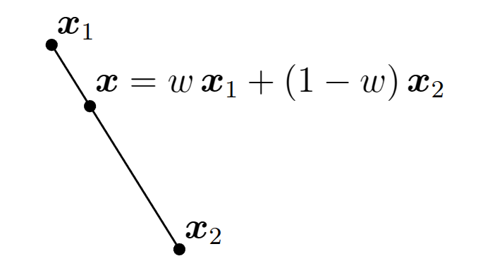
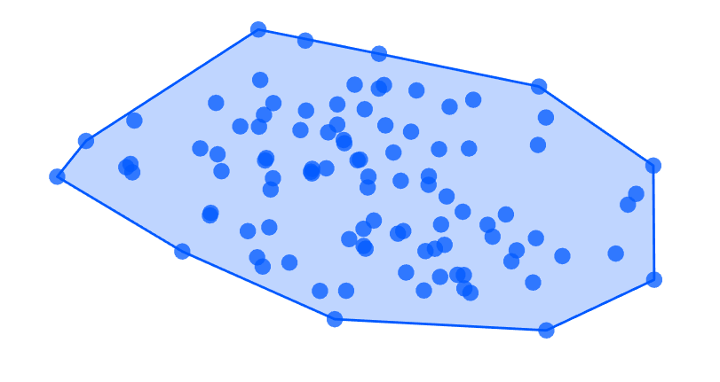
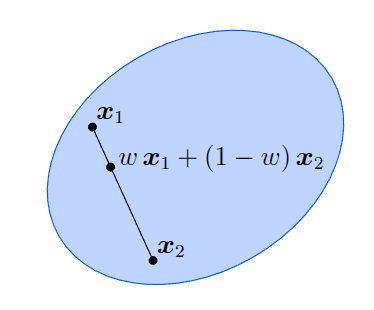
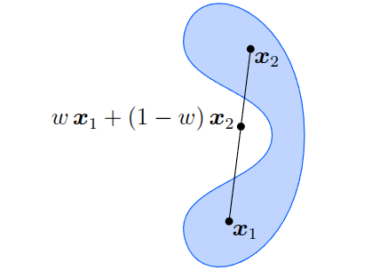
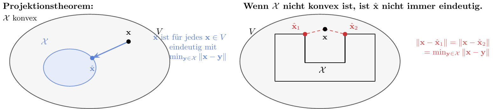
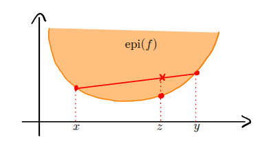
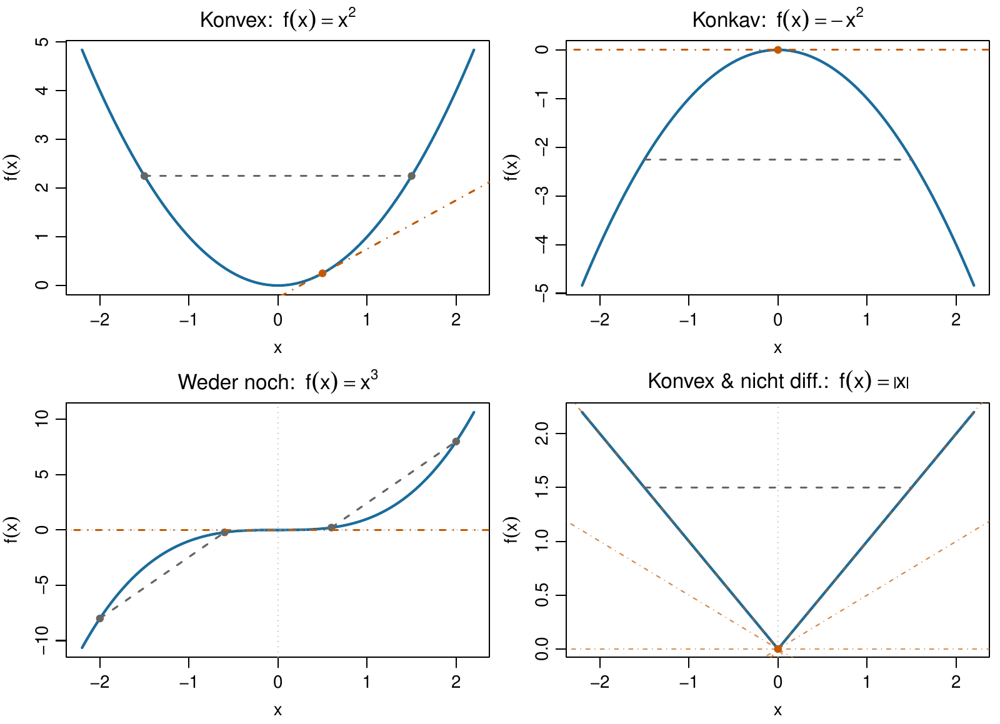
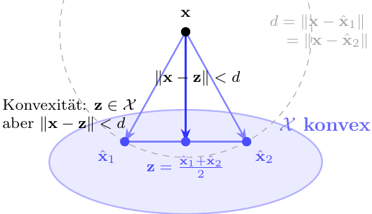

Fortgeschrittene mathematische Methoden in der Statistik
fabian.scheipl@lmu.de)\[ \definecolor{fmmgreen}{RGB}{0,158,115} \definecolor{fmmblue}{RGB}{0,114,178} \definecolor{fmmred}{RGB}{213,94,0} \definecolor{fmmorange}{RGB}{230,159,0} \definecolor{fmmpurple}{RGB}{158,87,213} \newcommand{\ind}{\unicode{x1D7D9}} \newcommand{\R}{{\mathbb{R}}} \newcommand{\N}{{\mathbb{N}}} \newcommand{\Q}{{\mathbb{Q}}} \newcommand{\C}{\mathbb{C}} \newcommand{\P}{\mathbb{P}} \newcommand{\Z}{{\mathbb{Z}}} \newcommand{\E}{{\mathbb{E}}} \newcommand{\K}{{\mathbb{K}}} \newcommand{\L}{\mathbb{L}} \newcommand{\F}{{\mathbb{F}}} \newcommand{\G}{\mathbb{G}} \newcommand{\S}{\mathbb{S}} \newcommand{\D}{{\mathbb{D}}} \newcommand{\bnull}{{\boldsymbol{0}}} \newcommand{\bzero}{{\boldsymbol{0}}} \newcommand{\ba}{{\boldsymbol{a}}} \newcommand{\bb}{{\boldsymbol{b}}} \newcommand{\bc}{{\boldsymbol{c}}} \newcommand{\bd}{{\boldsymbol{d}}} \newcommand{\be}{{\boldsymbol{e}}} \newcommand{\bg}{{\boldsymbol{g}}} \newcommand{\bh}{{\boldsymbol{h}}} \newcommand{\bi}{{\boldsymbol{i}}} \newcommand{\bj}{{\boldsymbol{j}}} \newcommand{\bk}{{\boldsymbol{k}}} \newcommand{\bl}{{\boldsymbol{l}}} \newcommand{\bn}{{\boldsymbol{n}}} \newcommand{\bo}{{\boldsymbol{o}}} \newcommand{\bp}{{\boldsymbol{p}}} \newcommand{\bq}{{\boldsymbol{q}}} \newcommand{\br}{{\boldsymbol{r}}} \newcommand{\bs}{{\boldsymbol{s}}} \newcommand{\bt}{{\boldsymbol{t}}} \newcommand{\bu}{{\boldsymbol{u}}} \newcommand{\bv}{{\boldsymbol{v}}} \newcommand{\bw}{{\boldsymbol{w}}} \newcommand{\bx}{{\boldsymbol{x}}} \newcommand{\by}{{\boldsymbol{y}}} \newcommand{\bz}{{\boldsymbol{z}}} \newcommand{\bA}{{\boldsymbol{A}}} \newcommand{\bB}{{\boldsymbol{B}}} \newcommand{\bC}{{\boldsymbol{C}}} \newcommand{\bD}{{\boldsymbol{D}}} \newcommand{\bE}{{\boldsymbol{E}}} \newcommand{\bF}{{\boldsymbol{F}}} \newcommand{\bG}{{\boldsymbol{G}}} \newcommand{\bH}{{\boldsymbol{H}}} \newcommand{\bI}{{\boldsymbol{I}}} \newcommand{\bJ}{{\boldsymbol{J}}} \newcommand{\bK}{{\boldsymbol{K}}} \newcommand{\bL}{{\boldsymbol{L}}} \newcommand{\bM}{{\boldsymbol{M}}} \newcommand{\bN}{{\boldsymbol{N}}} \newcommand{\bO}{{\boldsymbol{O}}} \newcommand{\bP}{{\boldsymbol{P}}} \newcommand{\bQ}{{\boldsymbol{Q}}} \newcommand{\bR}{{\boldsymbol{R}}} \newcommand{\bS}{{\boldsymbol{S}}} \newcommand{\bT}{{\boldsymbol{T}}} \newcommand{\bU}{{\boldsymbol{U}}} \newcommand{\bV}{{\boldsymbol{V}}} \newcommand{\bW}{{\boldsymbol{W}}} \newcommand{\bX}{{\boldsymbol{X}}} \newcommand{\bY}{{\boldsymbol{Y}}} \newcommand{\bZ}{{\boldsymbol{Z}}} \newcommand{\tagqed}{\tag*{$\blacksquare$}} \newcommand{\Acal}{{\mathcal{A}}} \newcommand{\Bcal}{{\mathcal{B}}} \newcommand{\Ccal}{{\mathcal{C}}} \newcommand{\Dcal}{{\mathcal{D}}} \newcommand{\Ecal}{{\mathcal{E}}} \newcommand{\Fcal}{{\mathcal{F}}} \newcommand{\Gcal}{{\mathcal{G}}} \newcommand{\Hcal}{{\mathcal{H}}} \newcommand{\Ical}{{\mathcal{I}}} \newcommand{\Jcal}{{\mathcal{J}}} \newcommand{\Kcal}{{\mathcal{K}}} \newcommand{\Lcal}{{\mathcal{L}}} \newcommand{\Mcal}{{\mathcal{M}}} \newcommand{\Ncal}{{\mathcal{N}}} \newcommand{\Ocal}{{\mathcal{O}}} \newcommand{\Pcal}{{\mathcal{P}}} \newcommand{\Qcal}{{\mathcal{Q}}} \newcommand{\Rcal}{{\mathcal{R}}} \newcommand{\Scal}{{\mathcal{S}}} \newcommand{\Tcal}{{\mathcal{T}}} \newcommand{\Ucal}{{\mathcal{U}}} \newcommand{\Vcal}{{\mathcal{V}}} \newcommand{\Wcal}{{\mathcal{W}}} \newcommand{\Xcal}{{\mathcal{X}}} \newcommand{\Ycal}{{\mathcal{Y}}} \newcommand{\Zcal}{{\mathcal{Z}}} \newcommand{\eps}{{\varepsilon}} \newcommand{\beps}{{\boldsymbol{\epsilon}}} \newcommand{\balpha}{{\boldsymbol{\alpha}}} \newcommand{\bbeta}{{\boldsymbol{\beta}}} \newcommand{\bchi}{{\boldsymbol{\chi}}} \newcommand{\bdelta}{{\boldsymbol{\delta}}} \newcommand{\bDelta}{{\boldsymbol{\Delta}}} \newcommand{\bepsilon}{{\boldsymbol{\epsilon}}} \newcommand{\bphi}{{\boldsymbol{\phi}}} \newcommand{\bgamma}{{\boldsymbol{\gamma}}} \newcommand{\betah}{{\boldsymbol{\eta}}} \newcommand{\btheta}{{\boldsymbol{\theta}}} \newcommand{\biota}{{\boldsymbol{\iota}}} \newcommand{\bkappa}{{\boldsymbol{\kappa}}} \newcommand{\blambda}{{\boldsymbol{\lambda}}} \newcommand{\bLambda}{{\boldsymbol{\Lambda}}} \newcommand{\bmu}{{\boldsymbol{\mu}}} \newcommand{\bnu}{{\boldsymbol{\nu}}} \newcommand{\bomikron}{{\boldsymbol{\omicron}}} \newcommand{\bpi}{{\boldsymbol{\pi}}} \newcommand{\bSigma}{{\boldsymbol{\Sigma}}} \newcommand{\bxi}{{\boldsymbol{\xi}}} \newcommand{\bzeta}{{\boldsymbol{\zeta}}} \newcommand{\bomega}{{\boldsymbol{\omega}}} \newcommand{\equivto}{{\Leftrightarrow}} \newcommand{\quequiv}{{\quad \equivto \quad}} \newcommand{\impl}{{\implies}} \newcommand{\quimpl}{{\quad \implies \quad}} \newcommand{\implby}{{\impliedby}} \newcommand{\notimplies}{\not\implies} \newcommand{\tr}{{\operatorname{tr}}} \newcommand{\spann}{{\operatorname{span}}} \newcommand{\col}{{\operatorname{col}}} \newcommand{\rang}{{\operatorname{rang}}} \newcommand{\diag}{{\operatorname{diag}}} \newcommand{\vec}{\operatorname{vec}} \newcommand{\pinv}{{^{+}}} \newcommand{\kron}{\mathbin{\otimes_{\mathrm{K}}}} \newcommand{\sign}{{\operatorname{sign}}} \newcommand{\la}{{\langle}} \newcommand{\ra}{{\rangle}} \newcommand{\inner}[1]{{\langle #1 \rangle}} \newcommand{\proj}{{\operatorname{proj}}} \newcommand{\bar}{\overline} \newcommand{\vol}{{\operatorname{vol}}} \newcommand{\dx}{{\, \mathrm{d}x}} \newcommand{\ol}{{\overline}} \newcommand{\argmax}{\mathop{\mathrm{arg\,max}}} \newcommand{\argmin}{\mathop{\mathrm{arg\,min}}} \newcommand{\conv}{\mathop{\mathrm{conv}}} \newcommand{\epi}{\mathop{\mathrm{epi}}} \newcommand{\interior}{\mathop{\mathrm{int}}} \newcommand{\Pr}{\mathbb{P}} \newcommand{\var}{{\mathbb{V}\mathrm{ar}}} \newcommand{\bias}{{\operatorname{bias}}} \newcommand{\abias}{{\mathrm{ABias}}} \newcommand{\AMSE}{{\mathrm{AMSE}}} \newcommand{\AMISE}{{\mathrm{AMISE}}} \newcommand{\cov}{{\mathbb{C}\mathrm{ov}}} \newcommand{\corr}{{\mathrm{Corr}}} \newcommand{\ov}{{\overline}} \newcommand{\wh}[1]{{\widehat{#1}}} \newcommand{\wt}[1]{{\widetilde{#1}}} \newcommand{\tod}{{\stackrel{d}{\to}}} \newcommand{\sumin}{{\sum_{i = 1}^n}} \newcommand{\sumjn}{{\sum_{j = 1}^n}} \newcommand{\KL}{{\operatorname{KL}}} \newcommand{\softmax}{{\operatorname{SoftMax}}} \newcommand{\layernorm}{{\operatorname{LayerNorm}}} \newcommand{\avg}{{\operatorname{avg}}} \newcommand{\relu}{{\operatorname{ReLu}}} \newcommand{\VC}{{\operatorname{VC}}} \newcommand{\indep}{{\perp \!\!\! \perp}} \newcommand{\unif}{{\operatorname{Unif}}} \newcommand{\bern}{{\operatorname{Bernoulli}}} \newcommand{\binomial}{{\operatorname{Binomial}}} \newcommand{\MSE}{{\operatorname{MSE}}} \newcommand{\iid}{\textit{iid}\;} \newcommand{\IF}{{\operatorname{IF} }} \newcommand{\BIC}{{\operatorname{BIC}}} \newcommand{\AIC}{{\operatorname{AIC}}} \newcommand{\IC}{{\operatorname{IC}}} \newcommand{\expl}[1]{{\tag*{[#1]}}} \newcommand{\cb}[1]{\textbf{#1}} \newcommand{\cbgreen}[1]{\textcolor{fmmgreen}{\textbf{#1}}} \newcommand{\cbred}[1]{\textcolor{fmmred}{\textbf{#1}}} \newcommand{\cbpurp}[1]{\textcolor{fmmpurple}{\textbf{#1}}} \newcommand{\cborange}[1]{\textcolor{fmmorange}{\textbf{#1}}} \newcommand{\corange}[1]{{\textcolor{fmmorange}{#1}}} \newcommand{\cblue}[1]{{\textcolor{fmmblue}{#1}}} \newcommand{\cgreen}[1]{{\textcolor{fmmgreen}{#1}}} \newcommand{\cred}[1]{{\textcolor{fmmred}{#1}}} \newcommand{\cpurp}[1]{{\textcolor{fmmpurple}{#1}}} \newcommand{\symbf}[1]{\boldsymbol{#1}} \]
Diese Folien: \(\to\) wichtigste Definitionen und Eigenschaften
In Optimierung / ML / Statistik:
In der Wahrscheinlichkeitstheorie:
Def.: Konvexkombination
Sei \(V\) ein Vektorraum und \(\Xcal = \{\bx_1, \dots, \bx_k\} \subset V\).
Dann nennen wir \(\bx\) eine Konvexkombination von Vektoren in \(\Xcal\),
falls es Koeffizienten \(w_1, \dots, w_k \geq 0\) gibt mit \[\begin{align*}
\bx = \sum_{i=1}^k w_i \bx_i \qquad \text{und} \qquad \sum_{i=1}^k w_i = 1.
\end{align*}\]
Konvexkombinationen sind spezielle Linearkombinationen.
Sie können als gewichteter Durchschnitt interpretiert werden.
Bsp.: Erwartungswert \(\E(X)\) für diskrete Zufallsvariable \(X\) mit endlichem Träger ist Konvexkombination der Werte des Trägers \(\mathcal X = T_X\): \[\E(X) = \sum_{x_j \in T_X} \Pr(X = x_j) x_j\]

Def.: Konvexe Hülle
Sei \(\Xcal \subset V\) eine beliebige Menge von Vektoren.
Die Menge aller Konvexkombinationen von endlich vielen Vektoren aus \(\Xcal\) wird als konvexe Hülle \(\conv(\Xcal)\) von \(\Xcal\) bezeichnet: \[\begin{align*}
\conv(\Xcal) = \left\{\bx = \sum_{i = 1}^N w_i \bx_i \colon N \in \N, \bx_i \in \Xcal, w_i \ge 0, \sum_{i = 1}^N w_i = 1\right\}
\end{align*}\]

Konkretes Beispiel im \(\R^2\): → Anhang.
Def.: Konvexe Menge
Eine Menge \(\Xcal \subset V\) in Vektorraum \(V\) wird als konvex bezeichnet, falls für alle \(\bx, \by \in \Xcal\) und alle \(\lambda \in [0, 1]\) gilt: \[\lambda \bx + (1 - \lambda) \by \in \Xcal.\]

konvex

nicht konvex
Konvexe Mengen enthalten für alle Paare von Punkten auch das Liniensegment zwischen diesen Punkten \(\implies\) sie haben keine “Einbuchtungen” oder “Löcher”.
Welche der folgenden Mengen ist konvex?
Weitere Beispiele
Beispiel in \(\R^3\):
Simplex \(\Delta^3\) besteht aus allen Punkten \(\bx = (x_1, x_2, x_3)\) mit \(x_1, x_2, x_3 \geq 0\) und \(x_1 + x_2 + x_3 = 1 = \|\bx\|_1\)
Extrempunkte:
\(\be_1 = \begin{pmatrix} 1 \\ 0 \\ 0 \end{pmatrix}\), \(\be_2 = \begin{pmatrix} 0 \\ 1 \\ 0 \end{pmatrix}\), \(\be_3 = \begin{pmatrix} 0 \\ 0 \\ 1 \end{pmatrix}\)
Anwendung in der Statistik:
Geometrisch:
\(\Delta^2\) ist die Strecke von \((1,0)\) nach \((0,1)\),
\(\Delta^3\) das Dreieck zwischen \(\be_1, \be_2\) und \(\be_3\),
\(\Delta^4\) ein Tetraeder, …
Def.: Positiv Semi-Definit
Eine symmetrische Matrix \(\bA \in \R^{n \times n}\) ist positiv semi-definit (PSD) \(\iff \bx^\top \bA \bx \geq 0 \;\forall\, \bx \in \R^n.\)
Wir schreiben: \(\bA \succeq 0\)
Seien \(\bA_1, \bA_2 \succeq 0\) und \(\lambda \in [0,1]\).
Zu zeigen:
\(\bA_\lambda = \lambda \bA_1 + (1-\lambda)\bA_2 \succeq 0\).
Für beliebiges \(\bx \in \R^n\): \[\begin{align*} \bx^\top \bA_\lambda \bx &= \bx^\top [\lambda \cgreen{\bA_1} + (1-\lambda)\cblue{\bA_2}] \bx \\ &= \lambda \cgreen{\bx^\top \bA_1 \bx} + (1-\lambda) \cblue{\bx^\top \bA_2 \bx} \\ &\geq \lambda \cdot \cgreen{0} + (1-\lambda) \cdot \cblue{0} = 0 \quad \text{(da $\cgreen{\bA_1}, \cblue{\bA_2} \succeq 0$)} \quad \blacksquare \end{align*}\]
Anwendung:
Kovarianzmatrizen sind stets PSD (SPD nur, falls keine Komponente linear von den übrigen abhängt) und bilden eine konvexe Menge.
Theorem: Konvexitätserhaltung
Seien \(\Xcal, \Xcal_1, \Xcal_2, \dots\) konvexe Mengen. Dann sind auch die folgenden Mengen konvex:
Beweis (4 Teile): → Anhang; konkretes Schnitt-Beispiel: → Anhang.
Proposition
Es gilt \(\conv(\Xcal) = \bigcap_{\Xcal \subseteq \Ycal, \Ycal \text{ konvex}} \Ycal\).
Beweis:
Sei \(\Scal = \bigcap_{\Xcal \subseteq \Ycal, \Ycal \text{ konvex}} \Ycal\).
Beispiel:
Theorem: Projektionstheorem
Sei \(\Xcal \neq \emptyset\) eine abgeschlossene, konvexe Teilmenge eines vollständigen Skalarproduktraums \(V\) (z.B. \(V = \R^n\)).
Dann existiert für jeden Punkt \(\bx \in V\) genau ein Punkt \(\hat{\bx} \in \Xcal\), der den minimalen Abstand zu \(\bx\) hat: \[\begin{align*}
\|\bx - \hat{\bx}\| = \min_{\by \in \Xcal} \|\bx - \by\|.
\end{align*}\] Dieser Punkt ist die Projektion von \(\bx\) auf \(\Xcal\).

Beweisskizze: → Anhang.
Def.: Epigraph
Der Epigraph einer Funktion \(f\colon \Xcal \to \R\) ist die Menge \[\begin{align*} \epi(f) = \{(\bx, t) \in \Xcal \times \R \colon t \ge f(\bx)\} \end{align*}\]
Der Epigraph enthält alle Punkte in \(\Xcal \times \R\), die auf oder über dem Graphen von \(f\) liegen.
Konvexe Funktionen \(f\colon \Xcal \to \R\) sind solche, deren Epigraph eine konvexe Menge ist. (\(\Xcal\) ist dann automatisch konvex.)


Def.: Konvexe Funktion
Sei \(\Xcal\) konvex und \(f\colon \Xcal \to \R\) eine Funktion.
Dann heißt \(f\) konvex, falls für alle \(\bx, \by \in \Xcal\) und alle \(\lambda \in [0, 1]\) gilt \[\begin{align*}
f(\lambda \bx + (1 - \lambda) \by) \le \lambda f(\bx) + (1 - \lambda) f(\by).
\end{align*}\]
Zu zeigen:
\(f(x) = |x|\) ist konvex auf \(\R\).
Seien \(x, y \in \R\) beliebig und \(\lambda \in [0,1]\). Zu prüfen: \[\begin{align*} f(\lambda x + (1-\lambda)y) &\stackrel{?}{\leq} \lambda f(x) + (1-\lambda)f(y) \end{align*}\]
Beweis (Dreiecksungleichung):
\[\begin{align*}
f(\lambda x + (1-\lambda)y) &= |\cgreen{\lambda x} + \cblue{(1-\lambda)y}| \\
&\le |\cgreen{\lambda x}| + |\cblue{(1-\lambda)y}| \\
&= \cgreen{\lambda |x|} + \cblue{(1-\lambda)|y|} \\
&= \lambda f(x) + (1-\lambda) f(y) \quad \blacksquare
\end{align*}\]
Die folgenden multivariaten Funktionen sind konvex:
Anwendung in ML / Statistik:
Proposition
Seien \(f_1, f_2, \dots\colon \Xcal \to \R\) konvexe Funktionen. Dann sind auch die folgenden Funktionen konvex:
Beweis für (ii) + (iv): → Anhang.
Satz: Jensen-Ungleichung
Sei \(\Xcal \subseteq \R^n\) eine konvexe Menge und \(f\colon \Xcal \to \R\) eine konvexe Funktion.
Dann gilt für alle \(N \in \N\), alle \(\bx_1, \ldots, \bx_N \in \Xcal\) und alle \(w_1, \ldots, w_N \ge 0\) mit \(\sum_{i=1}^N w_i = 1\): \[
f\left(\sum_{i=1}^N w_i \bx_i\right) \le \sum_{i=1}^N w_i f(\bx_i).
\]
Für eine Zufallsvariable \(X\) mit endlichem Träger \(T_X\) ist \(\E[X] = \sum_{x \in T_X} P(X = x) x\) eine Konvexkombination der Werte in \(T_X\) (Gewichte = Wahrscheinlichkeiten).
Mit der Jensen-Ungleichung und da \(x \mapsto x^2\) konvex ist gilt also: \[\E[X]^2 = f(\E[X]) \le \E[f(X)] = \E[X^2]\] Umstellen ergibt: \[\operatorname{Var}(X) = \E[X^2] - (\E[X])^2 \ge 0\]
Für allgemeine integrierbare \(X\) gilt die Ungleichung ebenfalls – der Beweis läuft dann über Stützgeraden statt über endliche Konvexkombinationen.
Theorem
Sei \(\Xcal \subseteq \R^n\) eine offene, konvexe Menge und \(f\colon \Xcal \to \R\) zweimal stetig differenzierbar.
Dann sind die folgenden Aussagen äquivalent:
Beweis: → Anhang.
Für \(f \in \mathcal C^2\) ist \(\bH_f(\bx)\) symmetrisch
\(\implies\) \(\bH_f(\bx)\) hat reelle Eigenwerte \(\lambda_i\) und orthonormale Eigenvektoren \(\bv_i\):
Heute gelernt
Nächste Vorlesung
Welche der folgenden Funktionen ist konvex?
Klassifizieren Sie: konvex, strikt konvex (d.h., die Ungleichung gilt strikt für \(\bx \neq \by\), \(\lambda \in (0,1)\)) oder keins von beiden?
(Zusatzbeispiel)
Sei \(\Xcal = \{(0,0), (2,0), (1,2)\} \subset \R^2\) (die Ecken eines Dreiecks).
Extrempunkte:
Alle drei Punkte in \(\Xcal\) sind Extrempunkte, da sie nur durch \(w_i = 1, w_j = 0 \;\forall\, j \neq i\) erreicht werden können.
Konvexe Hülle:
\(\conv(\Xcal)\) ist die Menge aller Punkte der Form \[\begin{align*}
\bx = w_1 \begin{pmatrix} 0 \\ 0 \end{pmatrix} + w_2 \begin{pmatrix} 2 \\ 0 \end{pmatrix} + w_3 \begin{pmatrix} 1 \\ 2 \end{pmatrix}
\end{align*}\] mit \(w_1, w_2, w_3 \geq 0\) und \(w_1 + w_2 + w_3 = 1\).
Konkreter Punkt: Für \(w_1 = w_2 = w_3 = \tfrac{1}{3}\): \[\begin{align*} \bx &= \tfrac{1}{3} \begin{pmatrix} 0 \\ 0 \end{pmatrix} + \tfrac{1}{3} \begin{pmatrix} 2 \\ 0 \end{pmatrix} + \tfrac{1}{3} \begin{pmatrix} 1 \\ 2 \end{pmatrix} = \begin{pmatrix} 1 \\ \tfrac{2}{3} \end{pmatrix} \end{align*}\] Dieser Punkt (Schwerpunkt!) liegt im Inneren des Dreiecks.
(Zusatzbeispiel)
Konkrete Mengen im \(\R^2\):
Schnitt:
\(\Scal = \Xcal_1 \cap \Xcal_2 \cap \Xcal_3 = \{(x,y) : x \geq 0, y \geq 0, x+y \leq 1\}\)
Dies ist ein Dreieck mit Ecken \((0,0), (1,0), (0,1)\) - offensichtlich konvex!
Generell:
Polyeder (als Schnitte von Halbräumen) sind konvex – wichtig für lineare Programmierung (Optimierung unter linearen Nebenbedingungen)!
Für jedes \(\lambda \in [0,1]\) gilt wegen Konvexität \(\cgreen{\bz} = \lambda \cblue{\hat{\bx}_1} + (1-\lambda)\cblue{\hat{\bx}_2} \in \Xcal\) und nach der Dreiecksungleichung: \[\begin{align*}
\|\bx - \cgreen{\bz}\| &\le \lambda \|\bx - \cblue{\hat{\bx}_1}\| + (1-\lambda)\|\bx - \cblue{\hat{\bx}_2}\| = d
\end{align*}\] Wegen der Minimalität von \(d\) gilt sogar \(\|\bx-\cgreen{\bz}\|=d.\)
Wähle Mittelpunkt \(\cgreen{\bz} = (\cblue{\hat{\bx}_1} + \cblue{\hat{\bx}_2})/2\) und setze \(\bu := \bx-\cblue{\hat{\bx}_1}\), \(\bv := \bx-\cblue{\hat{\bx}_2}\).

Aus der Definition von \(\cgreen{\bz}\) folgt \(\bx-\cgreen{\bz}=\frac{\bu+\bv}{2},
\quad
\cgreen{\bz}-\cblue{\hat{\bx}_1}=\frac{\bu-\bv}{2}\),
und diese sind orthogonal: \(\left\langle \bx-\cgreen{\bz},\cgreen{\bz}-\cblue{\hat{\bx}_1}\right\rangle
=\frac14\langle \bu+\bv,\bu-\bv\rangle
=\frac14\left(\|\bu\|^2-\|\bv\|^2\right)
=\frac14\left(d^2-d^2\right)=0\)
Damit also auch \[\begin{align*}
\|\bx - \cblue{\hat{\bx}_1}\|^2 &= \|(\bx - \cgreen{\bz}) + (\cgreen{\bz} - \cblue{\hat{\bx}_1})\|^2 \\
&= \|\bx - \cgreen{\bz}\|^2 + \|\cgreen{\bz} - \cblue{\hat{\bx}_1}\|^2 \expl{$(\bx - \cgreen{\bz})\perp (\cgreen{\bz} - \cblue{\hat{\bx}_1})$}\\
&> \|\bx - \cgreen{\bz}\|^2,
\end{align*}\] also: Widersprüchlich \(d^2 > d^2\) \(\implies\) Projektion eindeutig. \(\blacksquare\)
(Beweis der \(\mathcal C^2\)-Charakterisierung; (i) \(\iff\) (ii))
(Beweis der \(\mathcal C^2\)-Charakterisierung, fortgesetzt; (ii) \(\iff\) (iii))
(Proposition Summe/Skalierung/Maximum/Grenzwert)
Seien \(\bx,\by\in\Xcal\), \(\lambda\in[0,1]\) und \(\bz:=\lambda\bx+(1-\lambda)\by\).
(ii) Skalierung: Für \(f=c f_1\) mit \(c\geq 0\) gilt \[\begin{align*} f(\bz) &= \cblue{c}\,\cgreen{f_1(\bz)} \\ &\le \cblue{c}\left[\lambda\cgreen{f_1(\bx)} +(1-\lambda)\cgreen{f_1(\by)}\right] \\ &= \lambda f(\bx) + (1 - \lambda) f(\by). \end{align*}\]
Die Ungleichung folgt aus der Konvexität von \(f_1\); Multiplikation mit \(c\geq0\) erhält ihre Richtung.
(iv) Grenzwert: Wegen der Konvexität von \(f_n\) gilt für jedes \(n\) \[f_n(\bz)\leq\lambda f_n(\bx)+(1-\lambda)f_n(\by).\]
Da alle beteiligten Folgen konvergieren, können wir den Grenzwert bilden: \[\begin{align*} f(\bz) &=\lim_{n\to\infty} f_n(\bz) \\ &\leq \lambda\lim_{n\to\infty}f_n(\bx) +(1-\lambda)\lim_{n\to\infty}f_n(\by) \\ &=\lambda f(\bx)+(1-\lambda)f(\by). \end{align*}\]